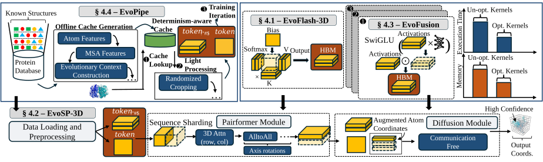
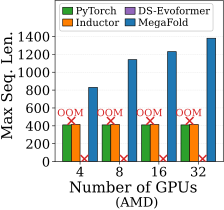
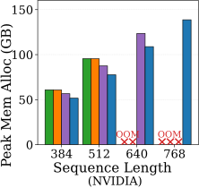
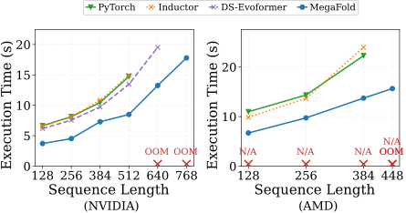

News
- 2026-03 Officially accepted to ISC High Performance 2026 🎉🥳
- 2025-06 MegaFold paper and code are released!
Recent advances in biomolecular modeling have been catalyzed by models such as AlphaFold3 (AF3), which introduce science-informed changes to the transformer architecture. Unlike transformers, a defining characteristic of AF3-style models is their 3D attention over 2D pairwise representations which produces tensors whose computation and memory costs scale cubically with sequence length. As a result, despite moderate parameter counts, AF3-style models are far more expensive to train than size-equivalent transformers, and are severely constrained by GPU memory capacity. Our characterization shows 3D attention fundamentally changes the training workload, causing massive 3D attention maps, complex inter-operator dependencies, kernel fragmentation, and heavy host-side data pipelines which differ substantially from LLM training, leading to poor utilization on modern GPU systems. Moreover, existing GPU optimizations do not adequately address these challenges due to complex cross-layer inter-operator dependencies introduced by 3D attention. Motivated by these challenges, we introduce MegaFold, a novel cross-platform system for efficient training of next-generation 3D-attention protein models. MegaFold combines a memory-efficient 3D-attention kernel, a communication-efficient sharding strategy for quadratic representations, fused operator implementations for critical execution paths, and a determinism-aware host-device pipeline that eliminates preprocessing stalls. Evaluation on both NVIDIA H200 and AMD MI250 GPUs shows that MegaFold enables training with up to 3.36x longer sequence lengths on 32 GPUs while reducing end-to-end execution time by up to 1.73x (NVIDIA) and 1.62x (AMD).

We evaluate MegaFold through extensive experiments, demonstrating its ability to significantly reduce memory consumption, accelerate training speeds, and support longer sequence lengths—all while maintaining computational precision. Our results show that MegaFold reduces peak memory usage by up to 1.23x, while improving per-iteration training time by up to 1.73x on NVIDIA and 1.62x on AMD. Moreover, MegaFold enables scalable training with up to 3.36x longer input sequence lengths on 32 GPUs. Indeed, our results show robust scalability across multi-GPU systems on both NVIDIA and AMD hardware.



First figure: Maximum trainable sequence length before OOMs for different systems as GPU count increases. Second figure: Per-device peak memory consumption prior to OOMs across sequence lengths on NVIDIA GPUs. Third and fourth figure: Average per-iteration execution time of AF3 training on a single GPU across sequence lengths.
@INPROCEEDINGS{11520503,
author={La, Hoa and Gupta, Ahan and Morehead, Alex and Cheng, Jianlin and Zhang, Minjia},
booktitle={ISC High Performance 2026 Research Paper Proceedings (41st International Conference)},
title={MegaFold: Efficient Training of Next-Generation 3D Attention Protein Models on Cross-Platform GPUs},
year={2026},
volume={},
number={},
pages={1-16},
keywords={Modeling;Training;Kernel;Optimization;Memory;Sequences;Sequential analysis;Tensors;Timing;Graphics processing units;High performance computing;Bioinformatics;Parallel algorithms;Performance analysis},
doi={10.23919/ISC.2026.11520503}}